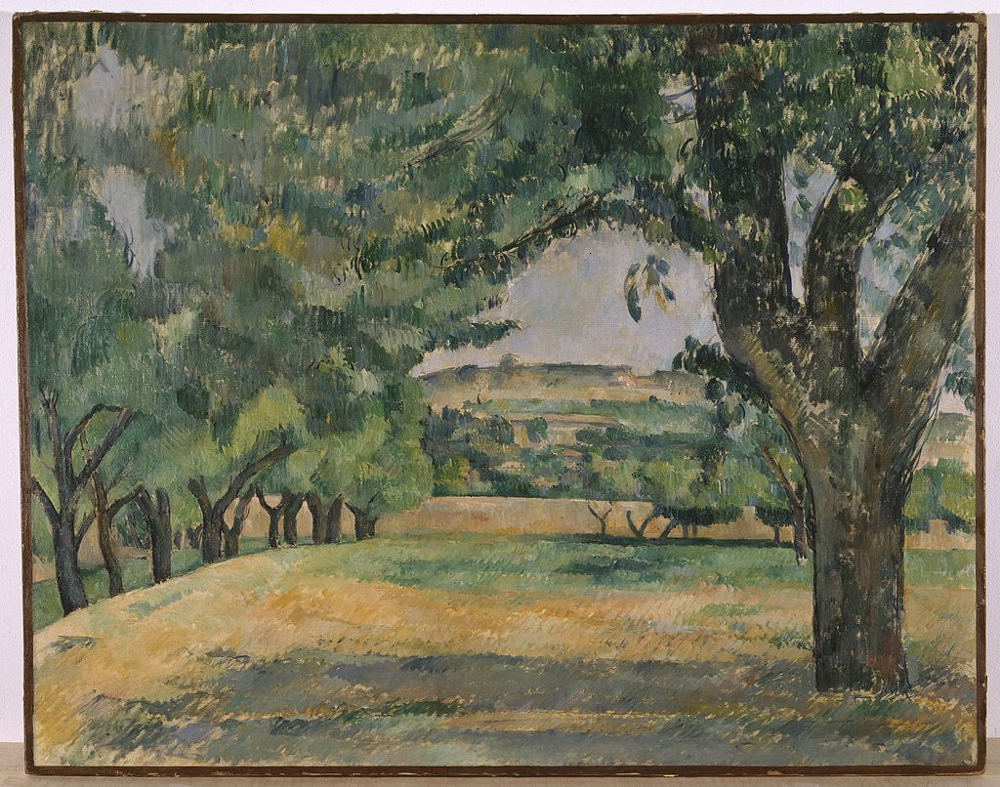

<head>
<meta charset="UTF-8" />
<meta name="keywords" content="drawing, painting" />
<meta name="description" content="drawings by Sunjy" />
<title>Sunjy</title>
<link rel="shortcut icon" type="image/x-icon" href="../../mImages/mCommon/favicon.ico" media="screen" />
<link rel="stylesheet" type="text/css" href="../../mCsses/mCommon/mCssA.css" />
<link rel="stylesheet" type="text/css" href="../../mCsses/mCommon/mCssB.css" />
<link rel="stylesheet" type="text/css" href="../../mCsses/mCommon/mCssC.css" />
<link rel="stylesheet" type="text/css" href="../../mCsses/mCommon/mCssD.css" />
<link rel="stylesheet" type="text/css" href="../../mCsses/mContent/mCssA.css" />
<link rel="stylesheet" type="text/css" href="../../mCsses/mContent/mCssB.css" />
<link rel="stylesheet" type="text/css" href="../../mCsses/mContent/mCssC.css" />
<link rel="stylesheet" type="text/css" href="../../mCsses/mContent/mCssD.css" />
</head>
<script type="text/javascript" src="../../mScripts/mContent/mContentAA.js" /></script>
<script type="text/javascript" src="../../mScripts/mContent/mContentAB.js" /></script>
<script type="text/javascript" src="../../mScripts/mContent/mContentAC.js" /></script>
<script type="text/javascript" src="../../mScripts/mContent/mContentAD.js" /></script>
<script type="text/javascript"></script> 
<script type="text/javascript">
document.write('<div class="mImgAbsolute"></div>');
/*
document.write('<p class="mFontSizeBColor" />From a white paper...</p>');
document.write('<table class="center"><tr><td>');
document.write('');
document.write('</td></tr></table>');
*/
</script>


<script type="text/javascript">
document.write('<p class="mFontSizeBColor" />The Neighborhood of Jas de Bouffan</p>');
document.write('<p class="mFontSizeSColor" />“The Neighborhood of Jas de Bouffan” by Paul Cézanne depicts a large foreground tree at one side and a grouping of smaller trees at the other side, to frame a distant view in the center.<br><br>Paul Cézanne created about thirty-seven oils and sixteen watercolors of the Jas de Bouffan and its surroundings. In the mid- and late 1880s that Cézanne explored the many motifs offered by the manor and its grounds.<br><br>Cézanne’s idyllic period at Jas de Bouffan was temporary. From 1890 until his death, he was beset by troubling events, and he withdrew further into his painting, spending long periods as a virtual recluse.<br><br>His problems began with the onset of diabetes in 1890, destabilizing his personality to the point where relationships with others were again strained.<br><br>He traveled to Switzerland with his wife, Hortense, and his son, hoping to restore their relationship. Cézanne, however, on returning to Provence lived in separate living quarters to his wife.<br><br>Cézanne then moved in with his mother and sister and in 1891 he turned to Catholicism.<br></p>');
document.write('<table class="center" /><tr><td>');
document.write('<br>Paul Cézanne created about thirty-seven oils and sixteen watercolors of the Jas de Bouffan and its surroundings. In the mid- and late 1880s that Cézanne explored the many motifs offered by the manor and its grounds.<br><br>Cézanne’s idyllic period at Jas de Bouffan was temporary. From 1890 until his death, he was beset by troubling events, and he withdrew further into his painting, spending long periods as a virtual recluse.<br><br>His problems began with the onset of diabetes in 1890, destabilizing his personality to the point where relationships with others were again strained.<br><br>He traveled to Switzerland with his wife, Hortense, and his son, hoping to restore their relationship. Cézanne, however, on returning to Provence lived in separate living quarters to his wife.<br><br>Cézanne then moved in with his mother and sister and in 1891 he turned to Catholicism.<br>" />');
document.write('</td></tr></table>');
</script>


